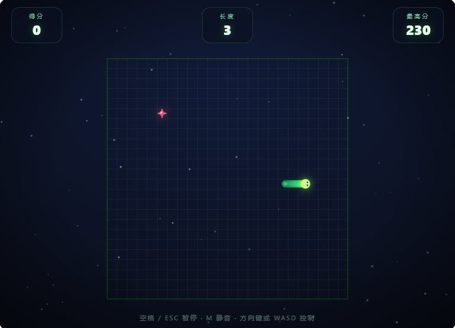
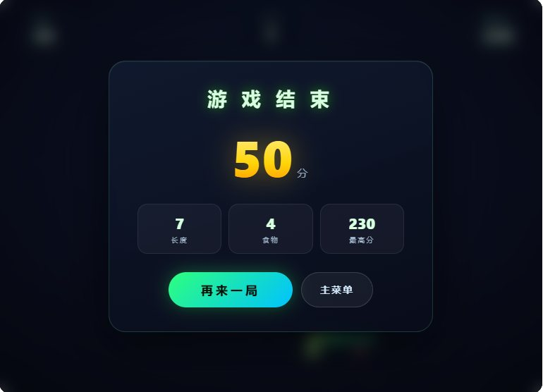

🐍 NEON SNAKE 霓虹贪吃蛇
🟢 Online Demo · 单文件 · 零依赖
项目介绍
一款可直接双击运行的单文件 HTML5 贪吃蛇游戏，拥有现代游戏应有的「手感」：平滑插值移动、连击倍率、粒子特效、合成音效、金色限时果实、双边界模式与三档难度，桌面端与移动端均可畅玩。
玩法亮点
- 🎨 霓虹暗黑主题：发光渐变蛇身、脉动食物、星空背景、粒子爆炸、屏幕震动与漂浮得分文字。
- 🎮 连击系统：2.5 秒内连续进食叠加 COMBO 倍率（最高 ×8）；每 5 个食物刷新金色果实（+50 分，8 秒限时）。
- 🧭 双边界模式：经典（撞墙即死）/ 穿墙（从对侧穿出）。
- ⚡ 三档难度：休闲 165ms · 标准 130ms · 极速 100ms，速度随吃食渐进加速。
- 🔊 Web Audio 合成音效：吃食音调随连击升高、金色果实琶音、死亡音效，零音频资源文件。
操作说明
- ⌨️ 移动：方向键 / WASD。
- 🚀 加速：长按当前方向键（手机长按屏幕 0.45 秒），1.8× 加速。
- ⏸️ 暂停 / 继续：Space / ESC / P。
- ▶️ 开始 / 再来一局：Enter。
- 🔇 静音开关：M。
- 📱 手机端：屏幕滑动控制方向。
技术亮点
- 固定时间步长 + 渲染插值：逻辑固定间隔步进，渲染层帧间插值，杜绝高速穿帧与抖动。
- 输入缓冲队列：最多缓存 3 个方向指令，支持快速连续转向并自动拦截 180° 掉头。
- Retina 适配：按 devicePixelRatio 缩放画布，高分屏依旧锐利。
- 移动端支持：触控滑动转向、安全区适配、touch-action 防滚动、localStorage 存档。
技术栈
实机截图

